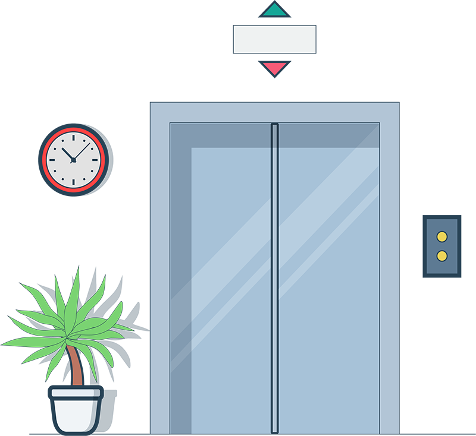

<!--
  Generated template for the LiftSettingPage page.

  See http://ionicframework.com/docs/components/#navigation for more info on
  Ionic pages and navigation.
-->
<ion-header>

  <ion-navbar color='primary'>
    <ion-title>{{name}}</ion-title>
  </ion-navbar>

</ion-header>


<ion-content>
  <!-- <my-device-info [data]="paramData"></my-device-info> -->
  <ion-list>
    <ion-item>
      <ion-label> <span *ngIf="!state">已关闭</span>
        <div ion-text color='primary' *ngIf="state">已打开
          <div float-right>{{f50Data.F507}}kW</div>
        </div>
      </ion-label>
      <ion-toggle [(ngModel)]="state" (ngModelChange)="setDeviceState(state)" [disabled]="auto"></ion-toggle>
    </ion-item>

  </ion-list>
  <div text-center>
    
  </div>
</ion-content>